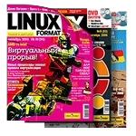

Команда ftp - это пользовательский интерфейс к стандартному
протоколу передачи файлов ARPANET (File Transfer Protocol или FTP).
ftp позволяет пользователю передавать файлы на другой компьютер
сети и получать их из него.
ФАЙЛЫ
/usr/lib/locale/локаль/LC_MESSAGES/uxftp
файл сообщений для текущего языка
(См. LANG в environ(5).)
ИСПОЛЬЗОВАНИЕ
В командной строке можно задавать следующие опции.
-c
Подавляет сообщение SYST. Эта опция используется для
предотвращения аварийного отказа удаленного сервера,
который не обрабатывает это сообщение и не может
работать с неизвестными сообщениями. Если первая же
команда после подключения к удаленному серверу
приводит к сообщению о том, что сервер отключил
соединение, добавьте опцию -c в командную строку ftp и
повторите запрос.
-C
Заставляет ftp послать сообщение SYST. По умолчанию
сообщение SYST не посылается.
-d
Включает отладку.
-g
Отключает расширение имен файлов (file name globbing).
-i
Отключает интерактивные приглашения в ходе передачи
нескольких файлов.
-n
Запрещает команде ftp пытаться автоматически
зарегистрироваться ("auto-login") сразу после
подключения. Если автоматическая регистрация
включена, ftp будет искать в файле .netrc
(см. ниже) в
начальном каталоге (home directory) пользователя
запись, описывающую учетную запись на удаленной
машине. Если такой записи нет, ftp запросит
регистрационное имя на удаленной машине (по
умолчанию предлагается регистрационное имя
пользователя на локальной машине), и, если необходимо,
запросит пароль для этого регистрационного имени.
-t
Включает трассировку пакетов.
-v
Включает режим информирования (verbose). Заставляет
ftp показывать все ответы удаленного сервера, а также
выдавать статистическую информацию о передаче
данных. Обычно, этот режим по умолчанию включен, за
исключением случаев, когда стандартный входной поток
не связан с терминалом.
Хост (host), с которым программа ftp должна взаимодействовать,
можно указать в командной строке. В этом случае ftp сразу попытается
установить соединение с сервером FTP на этом хосте; иначе, ftp
запустит свой командный интерпретатор и будет ждать инструкций от
пользователя. Когда программа ftp ожидает команд пользователя, ему
выдается приглашение "ftp>".
Команды
Программа ftp воспринимает следующие команды. Аргументы
команды, которые содержат пробелы, необходимо брать в
кавычки (").
! [ команда [ аргументы ] ]
Вызывает интерактивный командный интерпретатор на
локальной машине. Если заданы аргументы, первый из них
рассматривается как команда, которую необходимо
выполнить, а остальные - как аргументы для этой команды.
? [ команда ]
Синоним для команды help.
$ имя_макроса [ аргументы ]
Выполняет макрос имя_макроса, который был определен с
помощью команды macdef.
Аргументы передаются макросу без расширения.
Передает дополнительный пароль, требуемый удаленной
системой для доступа к ресурсам после успешного
завершения регистрации. Если аргумент не задан,
пользователю будет предложено ввести пароль учетной
записи в режиме ввода без отображения.
append локальный_файл [ удаленный_файл ]
Добавляет локальный_файл к файлу на удаленной машине.
Если удаленный_файл не указан, имя локального файла
используется для именования удаленного после выполнения
всех изменений, определяемых установками ntrans или
nmap. При передаче файла используются текущие
установки типа, формата, режима и структуры.
ascii
Устанавливает режим передачи файлов (file transfer type) в
ASCII. Этот тип передачи используется по умолчанию.
bell
Приводит к выдаче звукового сигнала после выполнения
каждой команды передачи файла.
Переключает изменение регистра имен файлов на
удаленном компьютере при выполнении команд mget.
Когда изменение регистра включено (по умолчанию оно
выключено), файлы с удаленного компьютера, в именах
которых все буквы - прописные (в верхнем регистре),
записываются в локальный каталог с преобразованием букв
в строчные (в нижнем регистре).
cd удаленный_каталог
Делает удаленный_каталог текущим каталогом на
удаленной машине.
cdup
Делает текущим каталогом на удаленной машине
родительский каталог текущего.
chmod [ режим ] [ удаленный_файл ]
Изменяет права доступа к удаленному файлу.
close
Прекращает сеанс FTP с удаленным сервером и
возвращается в командный интерпретатор. Все
определенные макросы стираются.
cr
Переключает удаление символа возврата каретки при
получении файла в режиме ascii. При передаче файлов в
режиме ascii записи (строки) заканчиваются парой
символов возврат каретки/перевод строки. Когда cr
включен (по умолчанию), символы возврата каретки
удаляются из этой последовательности, чтобы получить
ограничитель записи (record delimiter) UNIX в виде одного
перевода строки. Записи на не-UNIX удаленных системах
могут содержать одиночные символы перевода строки; при
выполнении передачи в режиме ascii эти переводы строки
можно будет отличить от ограничителя записи только если
cr сброшен.
delete удаленный_файл
Удаляет файл удаленный_файл с удаленной машины.
debug [ уровень_отладки ]
Переключает режим отладки. Если задан необязательный
параметр уровень_отладки, это значение используется для
установки уровня отладки. Когда отладка включена, ftp
печатает каждую команду, посылаемую на удаленную
машину, предваряя ее строкой "-->".
dir [ удаленный_каталог [ локальный_файл ] ]
Печатает листинг содержимого текущего каталога на
удаленной машине (или удаленного_каталога), и, при
необходимости, помещает его в локальный_файл. Если
включена выдача интерактивных приглашений, ftp попросит
пользователя проверить, что последний аргумент
действительно является тем локальным файлом, в котором
необходимо сохранить результат dir. Если каталог не
указан, используется текущий каталог на удаленной
машине. Если не указан локальный файл, или в качестве
локального файла указан -, результат выдается на
терминал.
disconnect
Синоним для close.
form формат
Устанавливает формат передачи файла. Значение формата
по умолчанию - file.
Получает удаленный_файл и сохраняет его на локальной
машине. Если имя локального файла не указано, он
получает то же имя, что и на удаленной машине, с учетом
изменений, вызванных текущими установками case,
ntrans и nmap.
При передаче файла используются текущие значения
типа, формата, режима и структуры.
Переключает расширение имени файла для команд
mdelete,
mget и mput.
Если расширение ("глобализация" - globbing)
выключено с помощью glob, аргументы имен файлов
используются буквально и не расширяются. Расширение
имен файлов для mput выполняется так же, как в
sh(1). Для
mdelete и mget, каждое имя удаленного файла расширяется
отдельно на удаленной машине и списки не сливаются в
один. Скорее всего, имя каталога будет расширяться не так,
как имя обычного файла: конкретный результат зависит от
удаленной операционной системы и сервера ftp; его можно
посмотреть, выполняя команду 'mls удаленные_файлы -'.
Учтите, что mget и mput не предназначены для пересылки
целых деревьев подкаталогов файлов. Это можно сделать,
пересылая архив tar(1) поддерева (в двоичном режиме).
hash
Переключает выдачу знака "#" для каждого переданного
блока данных. Размер блока данных равен BUFSIZ байтам.
BUFSIZ определен в файле stdio.h.
help [ команда ]
Выдает краткое (однострочное) описание команды. Если
аргумент не указан, ftp печатает список известных команд.
idle [ время_ожидания ]
Получает/устанавливает время ожидания на удаленной
машине.
Выдает сокращенный листинг содержимого каталога на
удаленной машине. Листинг включает любую системно-
зависимую информацию, которую решил включить сервер;
например, большинство систем UNIX будут выдавать
результат команды ls -l (см. также nlist). Если
удаленный_каталог не указан, используется текущий
каталог. Если включена выдача интерактивных приглашений,
ftp попросит пользователя проверить, что последний
аргумент действительно представляет собой локальный
файл, в который необходимо записать результат. Если
локальный файл не указан или в качестве
локального_файла указан -, результат посылается на
терминал. Дополнительные опции можно задавать, беря
аргументы в кавычки. Например, ls "-rt dir", приведет к
показу листинга каталога dir, упорядоченного по времени
последнего изменения файлов, если удаленная
операционная система - UNIX.
Определяет макрос. Последующие строки запоминаются как
макрос имя_макроса; пуста строка (подряд идущие
символы новой строки в файле или переводы строк,
введенные с терминала) прекращает режим ввода макроса.
Имеется ограничение - не более 16 макросов и 4096
символов суммарно во всех определенных макросах.
Макрос остается определенным, пока не будет выполнена
команда close. Макропроцессор интерпретирует '$' и '\' как
специальные символы. Символ '$', за которым идет цифра
(или цифры), заменяется на соответствующий аргумент
вызова макроса в командной строке. Символ '$', за которым
идет 'i', показывает макропроцессору, что макрос
необходимо выполнять циклически. На первом проходе '$i'
заменяется на первый аргумент вызова макроса в
командной строке, на втором проходе эти символы
заменяются на второй аргумент, и так далее. Символ '\', за
которым идет любой символ, заменяется на этот символ.
Используйте '\' для предотвращения специальной
обработки символа '$'.
Действует как dir, за исключением того, что можно указать
удаленные файлы. Если включена выдача интерактивных
приглашений, ftp попросит пользователя проверить, что
последний аргумент действительно представляет собой
локальный файл, в который необходимо записать результат
выполнения mdir.
Расширяет список удаленных_файлов на удаленной машине
и выполняет команду get для каждого полученного таким
образом имени файла. Подробнее о расширении имен
файлов см. в описании команды glob. Результирующие
имена файлов затем обрабатываются в соответствии с
текущими установками case,
ntrans и nmap. Файлы
передаются в локальный текущий каталог, который можно
изменить с помощью команды lcd каталог; новые локальные
каталоги можно создавать с помощью команды ! mkdir
каталог.
Аналогична nlist, но позволяет задать несколько имен
удаленных файлов, а локальный_файл указывать
обязательно. Если включена выдача интерактивных
приглашений, ftp попросит пользователя проверить, что
последний аргумент действительно представляет собой
локальный файл, в который необходимо записать результат
выполнения mls.
Расширяет символы-заместители (wild cards) в списке
локальных файлов, заданных в качестве аргументов, и
выполняет команду put для каждого файла в
результирующем списке. Подробнее о расширении имен
файлов см. в описании команды glob. Результирующие
имена файлов затем будут обрабатываться в соответствии с
установками ntrans и nmap.
Команда mput не позволяет задавать имена файлов на удаленной
машине.
newer удаленный_файл [ локальный_файл ]
Получает файл, если удаленный_файл более новый, чем
локальный_файл.
Выдает список файлов в каталоге на удаленной машине.
Если удаленный_каталог не указан, используется текущий
каталог. Если включена выдача интерактивных приглашений,
ftp попросит пользователя проверить, что последний
аргумент действительно представляет собой локальный
файл, в который необходимо записать результаты команды
nlist. Если локальный файл не указан или в качестве
локального_файла указан -, результат посылается на
терминал.
Дополнительные опции можно задать, взяв аргументы в
кавычки. Например, nlist "-rt dir" приведет к показу
упорядоченного по времени последнего изменения листинга
содержимого каталога dir.
Устанавливает или отключает механизм преобразования
имен файлов (filename mapping mechanism). Если аргументы
не указаны, механизм преобразования имен файлов
отключается. Если аргументы указаны, имена удаленных
файлов преобразуются в ходе выполнения команд mput и
команд put, в которых не указано имя удаленного файла.
Если аргументы указаны, имена локальных файлов
преобразуются в ходе выполнения команд mget и команд
get, в которых не указано имя локального файла. Эта
команда полезна при подключении к удаленному
компьютеру с не-UNIX операционной системой, имеющей
другие соглашения или традиции именования файлов.
Преобразование выполняется по шаблону,
устанавливаемому входным_шаблоном и
выходным_шаблоном. Входной_шаблон - это шаблон для
имен принимаемых файлов (которые могут быть
предварительно обработаны в соответствии с установками
ntrans и case).
Во входных_шаблонах можно использовать
подстановку переменных, включая в них
последовательности $1, $2, ..., $9. Чтобы предотвратить
такую специальную обработку символа '$', используйте '\'.
Все остальные символы рассматриваются буквально и
используются для определения значений переменных
входного шаблона nmap. Например, если входной_шаблон
задан как $1.$2, а удаленный файл имеет имя mydata.data,
$1 получит значение mydata, а $2 получит значение data.
Выходной_шаблон определяет имя файла, получающегося в
результате преобразования. Последовательности $1, $2, ...,
$9 заменяются значением, полученным по
входному_шаблону. Последовательность '$0' заменяется на
исходное имя файла. Кроме того, последовательность
[seq1,seq2] заменяется на seq1 если seq1 не является пустой
строкой; в противном случае она заменяется на seq2.
Например, команда nmap $1.$2.$3 [$1,$2].[$2,file] приведет к
выходному имени файла myfile.data для входных файлов с
именами myfile.data и myfile.data.old, myfile.file для
входного файла с именем myfile и myfile.myfile для
входного файла с именем .myfile. В выходной_шаблон
можно включать пробелы как в следующем примере: nmap
$1 |sed "s/ *$//" > $1. Используйте символ '\' для
предотвращения специальной обработки символов '$', '[',
']' и ','.
Устанавливает и отключает механизм перевода символов
имен файлов (filename character translation mechanism). Если
аргументы не указаны, механизм перевода символов имен
файлов отключается. Если указаны аргументы, символы в
именах удаленных файлов переводятся в ходе выполнения
команд mput и команд put,
в которых не указано имя удаленного файла. Если указаны аргументы, символы в
именах локальных файлов переводятся в ходе выполнения
команд mget и команд get,
в которых не указано имя локального файла. Эта команда полезна при
подключении к удаленному компьютеру с не-UNIX операционной системой,
имеющей другие соглашения или традиции именования
файлов. Символы в имени файла, соответствующие символу
во входных_символах, заменяются на соответствующий
символ из выходных_символов. Если позиция символа во
входных_символах больше, чем длина выходных_символов,
символ удаляется из имени файла.
Устанавливает соединение с сервером FTP на указанном
хосте. Можно дополнительно задать номер порта и в этом
случае ftp попытается обратиться к серверу FTP на этом
порту. Если опция автоматической регистрации включена
(по умолчанию), ftp также попытается автоматически
зарегистрировать пользователя на сервере FTP (см. ниже).
Переключает выдачу интерактивных приглашений
(interactive prompting). Выдача интерактивных приглашений
происходит при передаче нескольких файлов, чтобы дать
возможность пользователю избирательно получать или
записывать файлы. Если выдача интерактивных
приглашений отключена (по умолчанию она включена),
любая команда mget
или mput будет передавать все файлы,
а любая команда mdelete удалит все файлы.
Выполняет команду ftp по второму управляющему
соединению. Эта команда позволяет выполнить
одновременное подключение к двум удаленным серверам
FTP для передачи файлов между ними. Первой командой
proxy должна быть команда open для установления второго
управляющего соединения. Введите команду proxy ?, чтобы
увидеть другие команды ftp, которые можно выполнять по
второму управляющему соединению. Следующие команды
работают по-другому, если перед ними указана команда
proxy: open
не будет определять новые макросы в ходе
процесса автоматической регистрации, close не будет
стирать существующие определения макросов,
get и mget
передают файлы с хоста основного управляющего
соединения на хост второго управляющего соединения, а
put, mput и
append передают файлы с хоста второго
управляющего соединения на хост основного управляющего
соединения. Передача файлов третьим сторонам зависит от
поддержки команды PASV протокола ftp сервером, к
которому выполнено второе управляющее соединение.
Записывает локальный_файл на удаленную машину. Если
удаленный_файл не указан, для удаленного файла
используется имя локального файла после обработки в
соответствии с установками ntrans
или nmap. При передаче
файлов используются текущие установки типа, формата,
режима и структуры.
При вызове без аргументов показывает статус удаленной
машины. Если указано имя_файла, показывает статус файла
с соответствующим именем на удаленной машине.
Очищает очередь ответа. Эта команда повторно
синхронизирует последовательность команда/ответ с
удаленным сервером ftp. Повторная синхронизация может
понадобиться после нарушения протокола ftp удаленным
сервером.
Включает и отключает сохранение файлов с уникальными
именами в локальной системе. Если уже существует файл,
имя которого совпадает с именем целевого локального
файла для команды get или
mget, к имени добавляется .1.
Если получившееся в результате имя совпадает с именем
другого существующего файла, к исходному имени
добавляется .2. Если этот процесс доходит до .99, выдается
сообщение об ошибке и передача не происходит.
Сгенерированное уникальное имя файла сообщается
пользователю. Учтите, что runique не повлияет на
локальные файлы, сгенерированные из команды
интерпретатора shell (см. ниже). По умолчанию сохранение
с уникальными менами выключено.
Включает и отключает использование команд PORT. По
умолчанию, ftp будет пытаться использовать команду PORT
при установке соединения для каждой передачи данных.
Использование команд PORT может предотвратить
задержки при выполнении передач нескольких файлов. Если
команда PORT не срабатывает, ftp будет использовать
стандартный порт данных. Когда использование команд
PORT отключено, попытки использовать команды PORT для
каждой передачи данных предприниматься не будут. Это
может пригодиться для некоторых реализаций FTP,
которые игнорируют команды PORT, но ошибочно
показывают, что они восприняты.
Включает и отключает сохранение файлов с уникальными
именами на удаленной машине. Для успешного выполнения
удаленный сервер FTP должен поддерживать команду
STOU протокола FTP. Удаленный сервер проинформирует
пользователя о построенном уникальном имени. По
умолчанию сохранение файлов с уникальными именами на
удаленной машине отключено.
system
Показывает тип операционной системы на удаленной
машине.
tenex
Устанавливает необходимый тип передачи файлов для
работы с машинами TENEX.
Идентифицирует пользователя для удаленного сервера FTP.
Если пароль не указан, а сервер его требует, ftp предложит
пользователю ввести пароль (после отключения локального
эха). Если поле учетная_запись не указано, а сервер FTP
его требует, пользователю будет предложено ввести
соответствующее значение. Если поле учетная_запись
указано, команда account будет передана удаленному
серверу после завершения последовательности регистрации,
если удаленный сервер не требует указания учетной записи
для регистрации. Если ftp не вызван с отключением
автоматической регистрации, этот процесс выполняется
автоматически при первоначальном подключении к серверу FTP.
verbose
Включает и отключает режим информирования (verbose
mode). В режиме информирования все ответы сервера FTP
показываются пользователю. Кроме того, если режим
информирования включен, после завершения передачи
файла выдается статистическая информация о скорости
передачи. По умолчанию, режим информирования включен.
Прекращение передачи файла
Чтобы прекратить передачу файла, используйте клавиши
прерывания терминала (обычно Delete или Ctrl-C). Посылка фала
будет немедленно остановлена. Получение файлов
останавливается путем посылки команды ABORT протокола ftp
удаленному серверу, и игнорированием любых получаемых в
дальнейшем данных. Скорость срабатывания в этом случае
зависит от поддержки обработки команды ABORT удаленным
сервером. Если удаленный сервер не поддерживает команду
ABORT, приглашение ftp> не появится, пока удаленный сервер не
закончит пересылку запрошенного файла.
Нажатие клавиш(и) прерывания терминала будет
проигнорировано, когда программа ftp выполнила необходимую
локальную обработку и ожидает ответа удаленного сервера.
Длительная задержка в этом режиме может оказаться
результатом обработки команды ABORT, описанной выше, или
непредусмотренного поведения удаленного сервера, включая
нарушения протокола ftp. Если задержка произошла в результате
непредусмотренного поведения удаленного сервера, локальную
программу ftp придется прекращать вручную.
Соглашения по именованию файлов
Файлы, указанные в качестве аргументов команд ftp,
обрабатываются в соответствии со следующими правилами.
Если указано имя файла '-', используется stdin (для чтения)
или stdout (для записи).
Если первый символ имени файла - '|', остальные аргументы
интерпретируются как команда shell. ftp в этом случае
порождает shell с помощью popen(3S) с указанным
аргументом и читает из (записывает в) stdout (stdin). Если
команда shell содержит пробелы, аргумент должен браться в
кавычки. Типичный пример использования этого механизма:
"dir . | pg".
Если предыдущие проверки завершились неудачей и если
включено расширение имен, локальные имена файлов
расширяются в соответствии с правилами, используемыми в
sh(1); см. описание команды glob.
Если команда ftp ожидает один локальный файл (например,
как команда put),
используется только первое имя, сгенерированное операцией
расширения ("глобализации").
Для команд mget и команд
get, в которых не заданы
локальные имена файлов, локальный файл получает имя
удаленного, но с учетом возможных изменений,
определяемых установками case,
ntrans или nmap.
Результирующее имя файла может быть затем изменено, если
включена опция runique.
Для команд mput и команд put,
в которых не заданы имена удаленных файлов, удаленный файл получает
имя локального, но с учетом возможных изменений, определяемых
установками case, ntrans
или nmap. Результирующее имя
файла может быть затем изменено удаленным сервером, если
включена опция sunique.
Параметры передачи файлов
FTP определяет много параметров, которые могут повлиять на
передачу файла. Поддерживаются режимы (типы) ascii, image
(binary), ebcdic и local byte size. Команда ftp поддерживает
режимы передачи файлов ascii
и image, а также local byte size 8
для режима передачи tenex.
Команда ftp поддерживает только стандартные значения для
остальных параметров передачи файла: режима (mode), формы
(form) и структуры (struct).
Файл .netrc содержит информацию регистрации и инициализации,
используемую процессом автоматической регистрации. Он
находится в начальном каталоге пользователя. Распознаются
следующие конструкции, которые могут разделяться пробелами,
символами табуляции или переводами строк:
machine имя
Определяет имя удаленной машины. Процесс
автоматической регистрации ищет в файле .netrc
конструкцию machine, соответствующую удаленной машине,
указанной в командной строке ftp или как аргумент
команды open. Если соответствие найдено, обрабатываются
последующие конструкции .netrc вплоть до конца файла
или до следующей конструкции machine.
default
Действует так же, как machine имя, но соответствует
любому имени. Можно задавать только одну конструкцию
default и она должна идти после всех конструкций machine.
Обычно используется в виде default login anonymous
password user@site, давая таким образом пользователю
автоматическое подключение к анонимному серверу ftp для
машин, не указанных в .netrc. Это подключение можно
отменить, используя флаг -n для отключения
автоматической регистрации.
login имя
Определяет пользователя на удаленной машине. Если эта
конструкция указана, процесс автоматической регистрации
начнет регистрацию с использованием указанного имени.
password строка
Задает пароль. Если указана эта конструкция, процесс
автоматической регистрации передаст указанную строку,
если удаленный сервер в ходе процесса регистрации
затребует пароль. Учтите, что если эта конструкция
указана в файле .netrc, ftp прервет процесс автоматической
регистрации в случае, когда .netrc может быть прочитан
кем-либо кроме пользователя (владельца).
account строка
Задает дополнительный пароль учетной записи. Если
указана эта конструкция, процесс автоматической
регистрации передаст указанную строку, если удаленный
сервер потребует дополнительный пароль учетной записи,
иначе процесс автоматической регистрации инициирует
команду ACCT.
macdef имя
Определяет макрос. Эта конструкция действует как команда
ftp macdef. Определяется макрос
с указанным именем; его
содержание начинается со следующей строки .netrc и
продолжается до пустой строки (двух подряд идущих
символов новой строки). Если определен макрос с именем
init, он автоматически выполняется как последний шаг
процесса автоматической регистрации.
Предупреждения
Корректное выполнение многих команд зависит от правильного
поведения удаленного сервера.
Ошибка в обработке возвратов каретки в коде передачи
в режиме ascii
в 4.2BSD была исправлена. Это исправление может привести к
некорректным пересылкам двоичных файлов на и из серверов 4.2BSD в
режиме ascii. Чтобы избежать этой проблемы, используйте режим
передачи файлов binary.

Заканчивается подписка на журнал Linux Format. Спешите оформить подписку
на единственный в России ежемесячный журнал о Linux и получить электронный подарок от ГНУ/Линуксцентра!
Все, оформившие подписку на печатную версию журнала, получают в подарок электронные версии этих же журналов.
Теперь вы можете приступить к чтению журнала сразу в момент выхода свежего номера, не дожидаясь, пока вам доставят
бумажную версию!
Подпишитесь сегодня и сразу же получите именные электронные копии журналов за январь и февраль 2009!